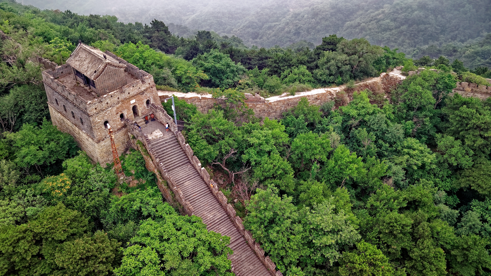
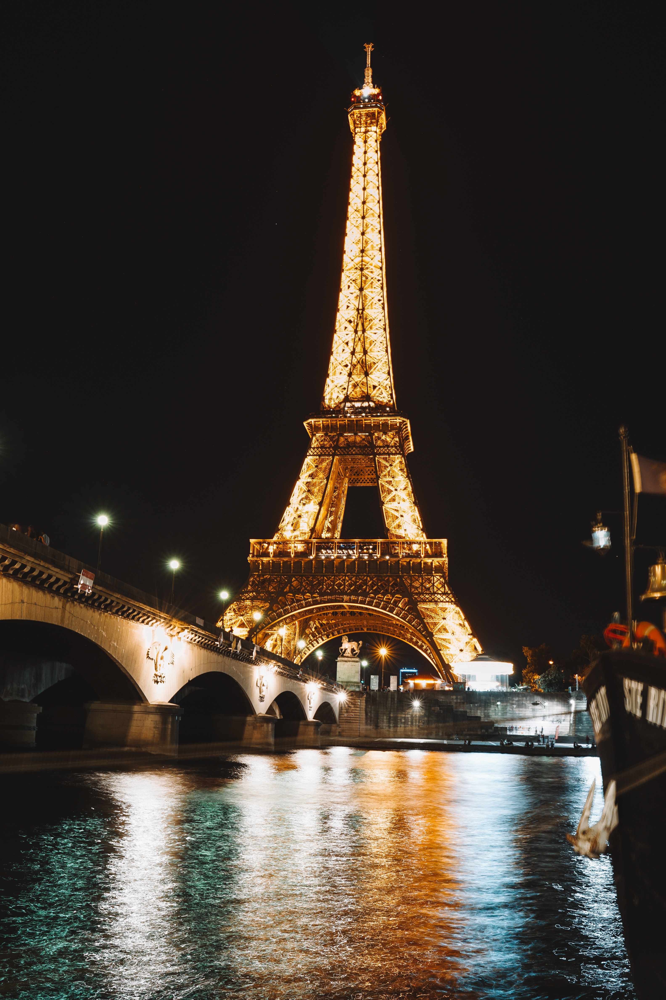
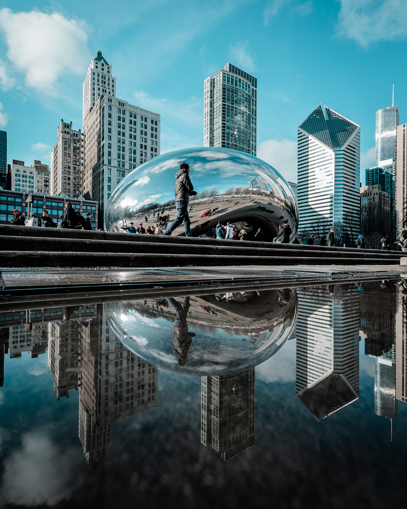

The great wall of chaina
The Great Wall of China (Chinese: 萬里長城; pinyin: Wànlǐ Chángchéng) is the collective name of a series of fortification systems generally built across the historical northern borders of China to protect and consolidate territories of Chinese states and empires against various nomadic groups of the steppe and their polities.
click to read morethe eiffel tower
The Eiffel Tower (/ˈaɪfəl/ EYE-fəl; French: tour Eiffel [tuʁ‿ɛfɛl] (About this soundlisten)) is a wrought-iron lattice tower on the Champ de Mars in Paris, France. It is named after the engineer Gustave Eiffel, whose company designed and built the tower. Constructed from 1887 to 1889 as the entrance to the 1889 World's Fair, it was initially criticised by some of France's leading artists and intellectuals for its design, but it has become a global cultural icon of France and one of the most recognisable structures in the world.[3
click here to read moreCloud Gate
Cloud Gate is a public sculpture by Indian-born British artist Sir Anish Kapoor, that is the centerpiece of AT&T Plaza at Millennium Park in the Loop community area of Chicago, Illinois. The sculpture and AT&T Plaza are located on top of Park Grill, between the Chase Promenade and McCormick Tribune Plaza & Ice Rink. Constructed between 2004 and 2006, the sculpture is nicknamed The Bean because of its shape, a name Kapoor initially disliked, but later grew fond of. Made up of 168 stainless steel plates welded together, its highly polished exterior has no visible seams. It measures 33 by 66 by 42 feet (10 by 20 by 13 m), and weighs 110 short tons (100 t; 98 long tons).
click here to read more